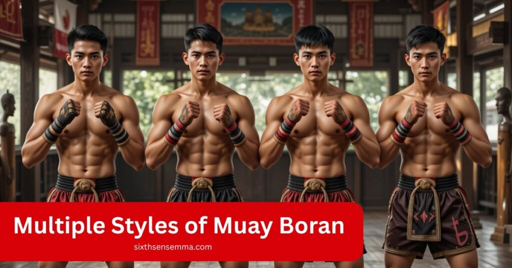
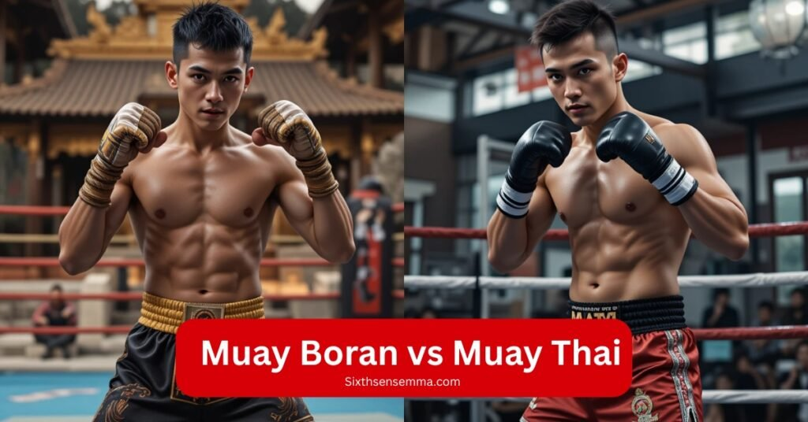
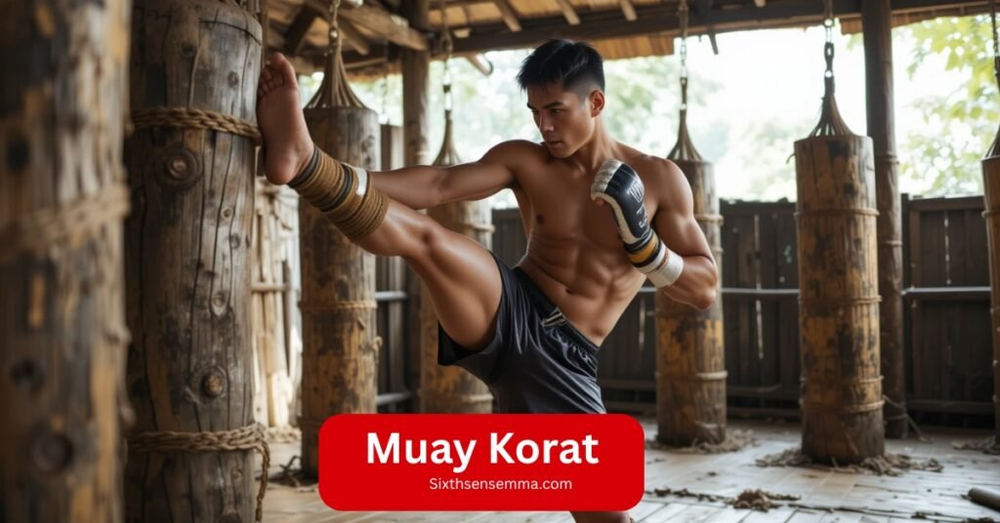

Are there Multiple Styles of Muay Boran Ideal for Fitness

Are there multiple styles of Muay Boran? Absolutely and each one carries its own rhythm, history, and teaching approach. Muay Boran isn’t just a martial art; it’s a powerful, meaningful journey that connects modern Muay Thai fighters to a deep warrior legacy.
As I dove into this ancient Thai fighting system, I was struck by its diverse regional styles, each offering unique training methods that cater especially well to beginners. Muay Chaiya emphasizes defense, balance, and fluid movement ideal for those seeking a less physically demanding, more structured foundation. In contrast, Muay Lopburi calls for sharp footwork and speed, suiting those with higher agility.
Muay Korat brings powerful, aggressive strikes that test physical strength and mental resilience. For those wanting cultural depth without complexity, Muay Thasao offers simpler techniques and lighter intensity. Choosing the right style depends on personal goals, fitness level, and available instruction but all paths encourage consistency, adaptability, and long term growth in a supportive environment.
Definition & Meaning
When I first encountered Muay Boran, I was fascinated by its roots as an ancient martial art from Thailand, far removed from the regulated sport of Muay Thai with its boxing rings, gloves, and standardized rules. Muay Boran, meaning “ancient boxing,” is a traditional, lethal style designed for battlefield effectiveness, where military forces used it as a complete system for real combat.
Unlike modern Muay Thai, which focuses on fists, shins, knees, and elbows, Muay Boran employs the whole body as a weapon, incorporating the head as a “ninth limb” alongside clinching, throws, chokes, joint locks, and even ground fighting. Its raw, unfiltered techniques, free from modern equipment, make it a powerful and versatile art that captivated me with its depth and intensity.
History in a Nutshell
The martial art of Muay Boran, which originated in the 13th Sukhothai era and was developed in the 14th and 18th centuries in the Ayutthaya Kingdom, is like touching Thailand’s living legacy when you enter. As I learned from demonstrations at local events and festivals, this cultural performance of hand to hand combat featuring ground strikes, joint locks, headbutts, kicks, elbows, and knees was shaped by military personnel and civilians alike.
Legends like Nai Khanom Tom, who in the 16th century defeated Burmese opponents, and masters under King Chulalongkorn V in the late 19th early 20th century, elevated its status, with noble titles awarded during royal funerals.
Styles like Muay Chaiya, Korat, and Lopburi thrived in schools and workshops, preserving traditional techniques before modernization under King Rama VII introduced Western influences like boxing rings, gloves, referees, weight classes, and timed rounds, blending cultural roots with a new era.
Muay Boran vs Muay Thai

As I immersed myself in Muay Boran, its raw martial art essence stood in stark contrast to the polished sport of Muay Thai, each with distinct characteristics that shaped my understanding of Thailand’s combat traditions. The table below captures their differences, blending my experience with the cultural depth of Thai Boran and the streamlined nature of Muay Thai.
| Aspect | Muay Boran | Muay Thai |
|---|---|---|
| Origins & Style | Ancient battlefield system, rooted in Wai Kru rituals and hemp rope bound hands, emphasizing flashy maneuvers. | Sport focused, polished modern evolution with Western influences. |
| Techniques | Nine weapons (fists, elbows, shins, knees, headbutts), sharp strikes, limb breaking moves, sweeping throws, joint locks, grappling, flying knees. | Focus on eight limbs (fists, elbows, shins, knees), clinch work, with no holds barred for ground techniques. |
| Stance & Guard | Open, wide, or low stance for efficient offense. | Tall guard, tight midline for controlled striking. |
| Rules & Structure | No ring boundaries, referees, or round time limits; lethal combat focus. | Structured with padded gloves, ring boundaries, referees, point scoring, and round time limits. |
| Cultural Depth | Deeply tied to Thai Boran traditions, reflecting a raw cultural heritage. | Streamlined for competition, less emphasis on cultural rituals. |
Why It Matters Today
Muay Boran may be rooted in ancient battlefields, but today its value goes far beyond that as a living piece of Thai heritage. It preserves striking techniques, traditional rituals, and warrior spirit that might have been lost if not for dedicated teachers.
In Thailand and around the world, Muay Boran is now taught in cultural centers, martial arts schools, and cherished demonstrations, keeping alive those original combative moves that influenced modern Muay Thai and remains a point of national pride
This martial art also brings strong benefits for the body, mind, and community. Training sessions include deep conditioning drills, grappling, joint control, and core strikes offering full body fitness and versatile self‑defense skills.
It builds physical strength and flexibility, sharpens mental awareness, improves discipline, and helps manage stress . Beyond training oneself, practitioners become stewards of culture, linking past warrior values respect, courage, humility to modern life .
Moreover, Muay Boran is gaining international momentum. Schools in the U.S., U.K., Europe, and beyond offer Boran specific classes and workshops. Organizations like IFMA even hold youth tournaments that showcase choreographed self defense forms rooted in Muay Boran
. By joining this trend, practitioners around the world experience genuine Thai culture and honor an ancient warrior legacybridging generations and continents through movement and tradition.
At its heart, Muay Boran matters today because it’s not just fighting it’s history in motion, a teacher of resilience, a bridge to Thai identity, and a dynamic heritage passed from temples and royal courts to dojos and everyday gyms around the world.
Modern Practice & Demonstrations
During my time training at Sitsiam Camp in the UK, I saw how Muay Boran isn’t just a traditional form but has evolved into a hybrid blend of practical technique and theatrical productions. In public events, I participated in choreographed demonstrations wearing traditional dress, complete with the Kard Chuek (or rope bound hands) and performed Wai Kru rituals.
These weren’t just for show they gave real insight into the historical context and values of Thai culture. The experience at Luktupfah and Rawai Muay Thai in Khao Lak added depth, especially through graded curricula and certified courses that focused on discipline and fitness.
I’ve also seen how cultural festivals, embassy functions, and temple ceremonies across Europe, Latin America, and JP Boxing Gym use these choreographed performances to keep the art alive. WMBF affiliated dojos often organize workshops and live shows, mixing fight choreography with actual Krabi Krabong weapon skills.
In one of our public performances, I remember facing off in a mock fight using Kard Chuek, like in the Thai Fight series it felt like stepping into history while showcasing the art’s modern beauty. Thanks to support from groups like IMBA, these demonstrations offer both learners and audiences a living story of heritage and strength.
Regional Styles of Muay Boran
Muay Boran isn’t a single uniform style it’s a tapestry of regional traditions, each shaped by local culture, geography, and combat needs. In Thailand, four major styles stand out:
Here’s the list with proper numbering:
1-Muay Thasao Northern Thailan
2-Muay Chaiya Southern Thailand
3-Muay Korat Northeastern Thailand
4-Muay Lopburi –Central Thailand
The old saying captures them perfectly: “Hard punch of Korat, spirit of Lopburi, posture of Chaiya, speed of Thasao”
Muay Korat
Muay Korat was the first style I experienced that truly tested my strength and taught me the roots of Thai martial tradition. Known for its powerful roundhouse kicks and forward leaning stance, Muay Korat fighters wrap their hands in thick rope wrapped bindings, focusing strikes through the last three knuckles using vertical fists.

We trained with banana trunks, practiced pad drills, and did heavy bag work that echoed the old days of rice pounding, wood chopping, and water carrying. The movement is raw, forceful, and built for counterstrikes, especially in close range, where you learn to use neck traps and footwork like the Thaksinawat Walk.
The Wai Kru dance in Muay Korat includes the Earth Goddess pose, paying respect to Mae Thorani, and traces back to the Rattanakosin era with ties to royal recognition by King Rama V. My teacher once told us stories of Phra Hensamahan, a Grand Master who documented 47 portals and 21 traditional moves, passing them down in Isarn, Khorat, and Nakhon Ratchasima.
We performed the Mahd Wiang Kwai or Buffalo-Throwing Punch during sparring, which taught us the art of controlling both space and rhythm. It’s a proud, ancient system that honors history while pushing your limits every session.
Muay Chaiya
Muay Chaiya was the style that changed how I thought about fighting. It doesn’t rely on brute force—it’s all about mental readiness, fluid defensive movements, and precision. My first class started with the Wai Kru Ram Muay, taught at a Temple in Wat Thung Chab Chang, where the monk warrior Phor Than Mar once trained.
Muay Chaiya, born in southern Thailand, stands out for its low stance, strong guard, and three point footwork known as Yang Sam Khum, forming a triangular 45° motion that allows quick evasion and powerful counter attacks. We trained using hemp rope kard chuek and focused on short range, whip like strikes that hit hard but with sharp trajectory.
One of the moves I found most useful was the Elephant Catching technique a smart blend of knee blocks, elbow shots, and explosive direction changes. The durian style, as my kru called it, teaches you to protect your core and strike back with unexpected angles.
We practiced in a cross legged and squatting form, doing foot tracing, stomping, and drills inspired by Tonglor, Sakkapoom, and Yalee Lamp movements seen in old fights and even movies like Ong Bak. Muay Chaiya may look calm from the outside, but inside it’s a storm controlled, ancient, and deadly when mastered.
Muay Lopbur
Muay Lopburi is the forward moving style I found most fascinating for its mix of intelligence, agility, and hard hitting power. It’s rooted in central Thailand, dating back to the 7th century CE in Lopburi, where legends say even King Ramkhamhaeng supported its spread. Unlike other styles, Muay Lopburi focuses on clever tactics, sudden feints, and deceptive patterns.
In one of our early sessions, my kru wrapped my half forearm and ankle with rope wraps to practice jumping attacks, uppercuts, and chin strikes that caught opponents off guard. We trained combinations like Mahd Suhy Dao, using upward facing fiach a lesson in timing and spacing.
My teacher, a student of the sage Sukatanta, always said that a real boxer doesn’t rely on size but on mind. That’s what Muay Lopburi builds speed, precision, and the confidence to strike at the perfect moment.
Muay Thasao
Muay Thasao, born in northern Thailand’s Uttaradit province, is unlike any style I’ve trained in. Known for its fluidity, agility, and wild speed, it mirrors the energy of a monkey, which is why it’s often called Monkey Feet Boxing. My first few sessions focused on acrobatic footwork, jumping strikes, and spinning moves, teaching how to strike from unorthodox angles using a whip like motion.
The iconic Serpent Flicking Its Tail or Naka Sabat Hang became one of my favorite techniques for landing sharp, snapping kicks with diagonal, high, and low targets. We trained with a light front foot, a wide back leg, and a rear arm guard, constantly shifting stance for surprise attacks.
What I admired most about Muay Thasao was its warrior code and the resilience it builds. Our kru taught us that the art came through family lineage, passed down through a selective process rooted in humility and mental strength.
We conditioned our ankles and shins by kicking banana trees and doing endless bag work and pad drills. The stance changes, back leg power, and snapping kicks demand true toughness and timing. Training here isn’t just about learning moves it’s about becoming a balanced fighter who combines speed with awareness, and strength with creativity.
Training and Techniques
Training in Muay Boran is designed to cultivate a complete, battle ready fighter, focusing on deep conditioning, versatile weapon skills, and flowing, effective movement. Below are the key pillars shaping today’s practice:
Nine Limbs System
The Nine Limbs System, also known as the Science of Nine Limbs, adds a powerful layer to traditional Muay Boran by including the head as a weapon alongside the fists, elbows, knees, shins, and feet forming a complete blend of defensive and offensive tools.
Referred to as Nawarthawooth, this system teaches controlled aggression through precise strikes like Mahd, Sok, Kao, and Tao, making every part of the body effective in battle. I remember using shields in training to practice attacking and blocking from all angles, learning to sharpen my shins, strengthen my knees, and time my elbows for close combat.
The focus wasn’t just on power, but on how and when to use each limb intelligently, making this system a perfect fit for beginners who want to develop full body control and true striking awareness.
Guard Positions in Muay Boran
The body stays upright, but the head is slightly tucked, hands raised at chest level with vertical fists ready for quick parries and fast responses. We were trained to keep a wide stance and a low center of gravity, which gave us balance and power, especially during swift clinches or while blocking groin attacks.
This low yet stable form of guard helps control space while giving full visibility and timing for counterstrikes. It’s not just about defense it’s the base from which every attack starts, and the silent teacher of discipline and awareness in real fighting.
Shared Techniques in Muay Thai and Muay Boran
When I began training in both Muay Thai and Muay Boran, I was surprised by how many shared techniques they had especially in clinch control, kicks, punches, elbows, and knees, which form the core of their eight limb attacks. In both systems, we practiced pad work and clinch drills, often adding groin strikes, headbutts, and joint locks in Muay Boran to expand our range.
I remember how intense the sessions got when we added throws and ground fighting, blending practical street defense into the traditional frame. The Wai Kru Ram Muay we performed before each session wasn’t just ceremonial it centered our focus before we explored the raw, close range power that both arts deliver.
Conditioning & Drills
When I first committed to Muay Boran, my kru emphasized how conditioning was just as vital as learning technique. We started each session with push ups, squats, pull ups, and core routines like planks and sit ups to build strength for every application in combat.
To develop timing and range, we did endless rounds of pad work and sparring, often focusing on neck control for clinches and posture. I spent hours kicking banana trunks and hitting the heavy bag to build bone strengthening and shin conditioning. We used leg plyometrics to improve explosiveness, always guided by the belief that the core is king because every strike, block, or counter begins from a strong, balanced center
The Lineage of Muay Thai and Muay Boran
Every time I step into training, I feel part of a powerful and meaningful legacy. The roots of Muay Thai and Muay Boran are tied not just to fighting, but to the journey of a warrior a blend of cultural depth, character building, and ancient history.
As a martial artist and a true enthusiast, learning these arts in traditional settings and during cultural festivals helped me understand why they are more than sports they’re a treasure passed down through generations.
From Lopburi to Thasao, Korat to Chaiya, each region shaped unique identities with clever tactics, acrobatic kicks, and defensive flow that reflect both the past and its transformation into a modern, global sport.
The sheer force and strategic brilliance of fighters today carry forward this lineage, built on multiple influences and regional styles. The essence of Muay isn’t just about strikes it’s a living story of resilience, wisdom, and spirit.
Why choose sixth sense mma is trusted partner
Sixth Sense MMA isn’t a typical gym it’s a specialized coaching center focused on thoughtful, traditional martial arts training. While it’s best known for Muay Thai, it’s also a trusted partner for those wanting to delve into the roots of Muay Boran.
Authentic instruction: Their adult Muay Thai program emphasizes real world technique and mental growth not just flashy moves. Coaches are known for teaching proper form and deep technical understandingStudent focused atmosphere.
With personalized feedback, small group sessions, and a community driven approach, it mirrors how Muay Boran is traditionally passed from master to student one on one and in small, focused settings.
Benefits of Training
- Full‑body conditioning: You’ll build strength, endurance, agility, and core stability through intense pad work, bag drills, and dynamic movement
- Self‑defense: The art’s inclusion of throws, head butts, joint manipulation, and body control makes it effective beyond ring fighting .
- Mental resilience & confidence: The tough training builds discipline, stress tolerance, and self confidence benefits often compared to or beyond regular Muay Thai
- Cultural depth: You’ll connect with Thai traditions like Wai Kru, rope wrapping rituals, and historical stories fostering community and cultural awareness
Customer Review:
Kelly Kim (Coppell, TX):
“My son learned real self defense and confidence. The coaches really care.”
Ian Jee’s Parent (Coppell, TX):
“This place builds character. My kid is learning discipline and respect.”
David Miller (Austin, TX):
“Instructors are world class. Great for beginners and women.”
Sarah Thompson (Dallas, TX):
“Clean facility, great coaching, and they teach real technique not just cardio.”
Ready to Start? Contact Us
Click here to speak with our coaches and get started with authentic Muay Boran training.you can contact us through call and email address
info@sixthsensemma.com,(469) 972-7800
Conclusion
For any enthusiast or martial artist, exploring its multiple, regional identities like Lopburi, Thasao, Korat, and Chaiya offers more than just skillit builds character, discipline, and respect for history. I’ve trained in both traditional settings and at festivals, and every encounter felt like uncovering a living cultural treasure.
Whether it’s the acrobatic kicks of Thasao or the clever tactics of Lopburi, Muay Boran offers a defensive flow and sheer force that shape not just fighters, but complete human beings. Its global rise as a modern sport still honors the past, making it a timeless path for those who seek purpose, not just power.
FAQ’s
Muay Boran is an ancient Thai martial art developed for battlefield combat. Unlike Muay Thai, which is a modern sport with rules and gloves, Muay Boran includes headbutts, throws, joint locks, and ground fighting. It’s more raw and comprehensive, using all parts of the body for offense and defense.
Yes, Muay Boran includes several regional styles:
- Muay Thasao (Northern Thailand)
- Muay Chaiya (Southern Thailand)
- Muay Korat (Northeastern Thailand)
- Muay Lopburi (Central Thailand)
Each style emphasizes different techniques, postures, and rhythms rooted in local culture.
Absolutely. Muay Boran offers full-body conditioning through dynamic drills, pad work, and traditional movements. It also includes practical self-defense techniques like headbutts, throws, joint locks, and clinch work that go beyond what’s taught in regular Muay Thai.
Muay Chaiya is often ideal for beginners due to its focus on defense, balance, and mental readiness. It’s less physically aggressive and builds a strong, structured foundation before moving into more complex techniques.
The Nine Limbs System, or Nawarthawooth, includes strikes from fists, elbows, knees, shins, feet—and adds the head as a weapon. This holistic system teaches practitioners to use their entire body for controlled aggression and complete self-defense.
Wai Kru is a ritual dance performed before Muay Boran or Muay Thai training or fights. It shows respect to teachers and ancestors and helps practitioners mentally prepare, grounding them in tradition and discipline.
Train with us in Coppell
The first class is free. Shorts, a t-shirt and a water bottle. We lend the rest.
Book a free class